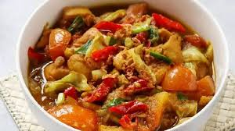

Resep tongseng ayam pedas, satu alternatif pengganti dari tongseng daging yang tidak kalah lezatnya. Cari tahu yuk cara membuatnya di sini!

Haloo sobat memasak ama semuanyaa^^ Gimana kabar nya nihh sobat-sobat semuanyaa, udah lama nih dapur ama tidak berbagi resep masakan indonesia yang tentunya sangat lezat!!
Kali ini dapur ama akan membagikan rezep memasak tongseng ayam nih, yuk baca penjelasannya di bawah ini^^
Tongseng Ayam
Tongseng ayam, pasti sobat dapur ama sudah tak asing lagi bukan mendengarnya? Tongseng memang dikenal berbahan dasar daging kambing atau sapi, namun kini sudah banyak yang mengganti bahan tersebut menjadi ayam karena lebih murah namun tak mengubah cita rasa.
Tongseng sendiri merupakan makanan khas dari daerah Jawa Tengah. Tongseng sekilas mirip gulai karena bumbunya cukup kuat dan tajam di lidah, namun yang membedakan adalah daging yang digunakan. Biasanya daging yang digunakan pada tongseng berupa potongan daging kecil-kecil yang masih melekat pada tulangnya, biasanya menggunakan daging kambing atau sapi bagian tulang iga atau tulang belakangnya.
Tongseng umumnya dapat dinikmati dengan kuah santan yang kental. Tapi, untuk sobat dapur ama sekalian yang tengah menghindari atau mengurangi olahan santa, tongseng ayam tanpa santan juga tidak kalah menggiurkan. meskipun kuahnya tidak sekental kuah santan, olahan tongseng ayam tetap akan memberikan rasa guyrih yang nendang abis.
Namun, kini banyak yang mengganti daging kambing dan sapi tersebut dengan ayam. Selain karena harganya lebih murah, rasa tongseng ayam pun tidak kalah dengan tongseng sapi atau kambing. Lantas jika tongseng telah menjadi makanan favorit anda, tahukah anda bagaimana sejarah dari tongseng? Jika belum, anda bisa menyimak informasi berikut ini beserta resep tongseng ayam yang enak!
Penjelasan sejarah tongseng mari klik link ini coba baca selengkapnya
Berikut ini bahan dan lengkah membuat tongseng ayam:
Bahan-bahan
3/4Dada ayam tanpa tulang (potong sesuai selera)
Kol secukupnya
Tomat dan daun bawang
7 bawang putih dan 10 bawang merah
2 butir kemiri dan 1 ruas jahe
Penyedap rasa
1 sdt garam dan gula
Kecap manis
Cara Memasak
Iris tipis 2 siung bawang merah, 4 cabai rawit potong kecil-kecil, iris tomat, dan juga daun bawang
Haluskan kemiri, sisa bawang merah, bawang putih, jahe, kunyit bubuk dan juga ketumbar bubuk.
Lalu, tumis bawang merah dan cabai yang telah diiris tipis sebelumnya. Lalu setelah layu, tambahkan bumbu halus. Jangan lupa tumis bersama dengan lengkuas, serai, daun dalam dan juga daun jeruk yang bagian tengahnya telah dihilangkan.
Masak bumbu tersebut hingga benar-benar matang. Setelah itu, tambahkan ayam yang telah dipotong-potong sebelumnya, aduk hingga bumbu tercampur dengan merata. Masak hingga ayam mengeluarkan air dan berubah warna.
Setelah itu tambahkan air secukupnya, tambahkan juga garam, gula pasir, dan setengah kaldu bubuk. Tambahkan juga kecap manis sesuaikan dengan selera.
Setelah air mulai menyusut, tambahkan sayuran, yakni kol kemudian diaduk-aduk hingga kol layu. Kemudian tambahkan juga tomat yang telah dipotong, daun bawang dan cabai ujung (sesuai selera). Masak sebentar (pastikan kol tidak terlalu layu atau setengah matang).
Kemudian masak hingga air mulai menyusut, jangan lupa sesekali tongseng ayam diaduk.
Setelah air mulai menyusut, tambahkan sayuran, yakni kol kemudian diaduk-aduk hingga kol layu. Kemudian tambahkan juga tomat yang telah dipotong, daun bawang dan cabai ujung (sesuai selera). Masak sebentar (pastikan kol tidak terlalu layu atau setengah matang).
Setelah itu sobat dapur ama bisa mengecek kembali rasanya, jika masih kurang anda bisa menambahkan bumbu sesuai selera.
Untuk memudahkan sobat ama semua dalam memasak tongseng, yuk kita lihat video di bawah ini!
Gimana nih gampang banget kan bikin tongseng ayam pedas yang lezat ini? Terimakasihh sobat dapur ama yang sudah mengikuti tutorial ini, untuk membuat dapur ama menjadi lebih baik dan menarik yuk bantu sobat ama mengisi form ini yaa!